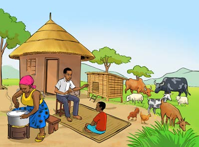
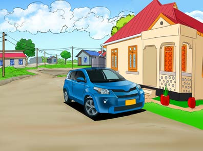

Home environment
Listen to the audio description or examine Figure 5 and answer the questions that follow:


1. What are the things found in the home environment?
2. Which of the things in Figure 5 are found in your home?
The home environment includes all the things found at home. These things can be inside or outside the house. The environment outside the house may include trees, flowers, birds, insects, animals, rivers, mountains, valleys and other things, depending on where one lives. The indoor environment may include beds, couches, cooking utensils, cleaning tools and other things found in the house.
The environment is often similar or different, depending on the things found in a given area. Therefore, it is not necessary for one’s home environment to be the same as another’s. Similarly, the environment of a particular area does not necessarily have to be the same as that of another.